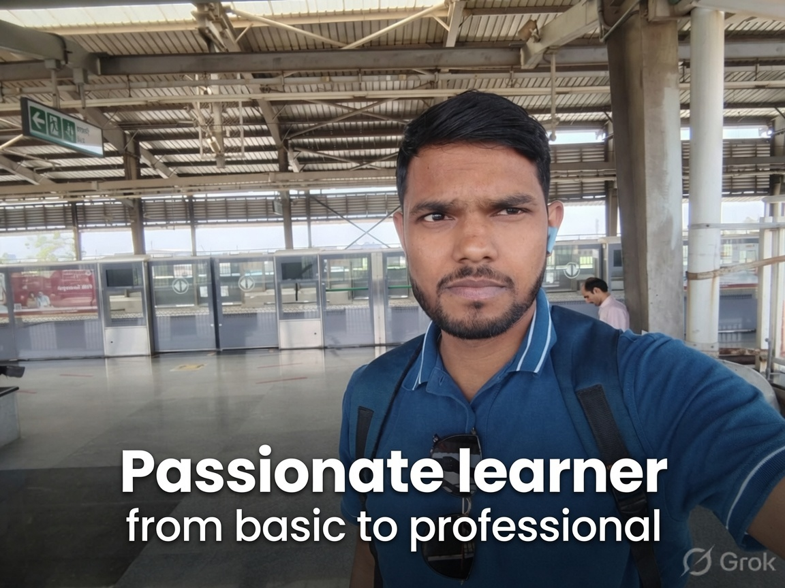

Passionate Learner | Healthcare Professional | Digital Enthusiast
I am a dedicated professional with a strong interest in healthcare operations, quality management, laboratory technologies, and digital innovation. Throughout my learning journey, I have believed that continuous education is the foundation of personal and professional growth. Every new skill I acquire motivates me to explore further and become more capable of solving real-world problems with confidence and accuracy.
My experience as a Claim Benefit Administrator has given me a practical understanding of the United States healthcare system, insurance claim processing, eligibility verification, medical terminology, Explanation of Benefits (EOB), Electronic Remittance Advice (ERA), patient responsibility, deductibles, copayments, coinsurance, and HIPAA compliance. I enjoy working with accuracy and attention to detail while ensuring claims are processed efficiently and according to established guidelines.
Alongside healthcare administration, I have developed knowledge in Digital Marketing. I enjoy learning about website development, search engine optimization (SEO), content creation, social media strategies, branding, and online audience engagement. Technology has enabled me to combine analytical thinking with creativity, helping me communicate ideas effectively through digital platforms.
I also have experience in Quality Control and Laboratory Technologies, where precision, observation, documentation, and continuous improvement are essential. Understanding laboratory procedures, quality standards, testing methods, and process control has strengthened my problem-solving abilities and reinforced the importance of maintaining high professional standards in every task.
Above all, I consider myself a passionate lifelong learner. I enjoy exploring subjects from the basic level to professional expertise, whether they involve healthcare, science, education, technology, or web development. My goal is to continuously expand my knowledge, create meaningful educational resources, and share practical information that benefits students, professionals, and future learners. I believe that consistent learning, discipline, and curiosity are the keys to long-term success, and I strive to improve myself every day through dedication, integrity, and a positive mindset.
Medical billing, insurance claims, EOB, ERA, HIPAA, eligibility verification and healthcare workflows.
SEO, website development, content strategy, online branding and digital communication.
Inspection, documentation, testing procedures, quality assurance and continuous improvement.
Laboratory practices, analytical techniques, safety awareness and scientific documentation.
